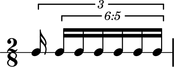

The Abjad _FMTupletDurationInterface class
The Abjad _FMTupletDurationInterface class manages the duration attributes of fixed-multiplier tuplets.
Public interface
Attributes
_duration — reimplement
augmentation
contents
diminution
multiplier
prolated
prolation
prolations
Example
abjad> tuplet = FixedMultiplierTuplet((5, 6), Note(0, (1, 16)) * 6) abjad> Beam(tuplet) abjad> outer = FixedMultiplierTuplet((2, 3), [Note(0, (1, 16)), tuplet]) abjad> measure = Measure((2, 8), [outer]) abjad> staff = RhythmicStaff([measure]) abjad> show(staff)
multiplier
abjad> tuplet.duration.multiplier Rational(5, 6)
augmentation
abjad> tuplet.duration.augmentation False
diminution
abjad> tuplet.duration.diminution True
prolated
abjad> tuplet.duration.prolated Rational(5, 24)
prolation
abjad> tuplet.duration.prolation Rational(2, 3)
prolations abjd> tuplet.duration.prolations [Rational(2, 3)]
Comments
See the _FMTupletDurationInterface class in tuplet/fm/duration.py for implementation details.
To do
Reimplement implicit _duration as some explicit attribute, maybe multiplied.